Celebrating milestones, innovations, and triumphs of the GSTU Science Club community.
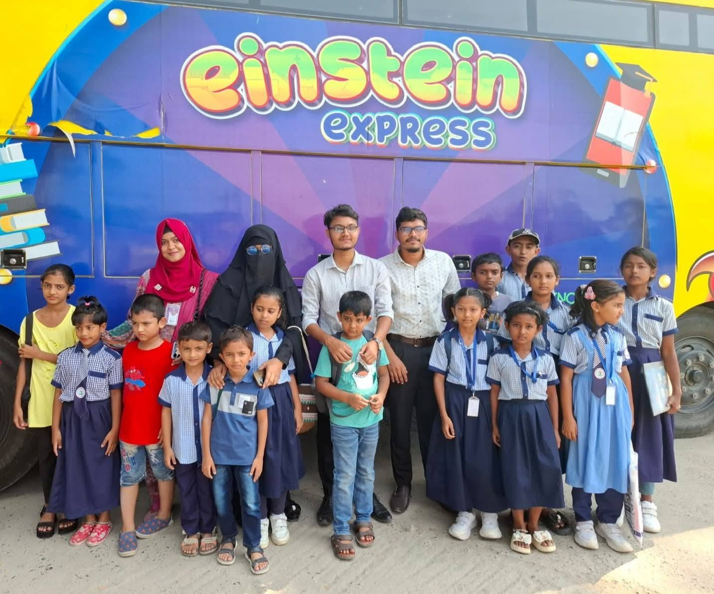
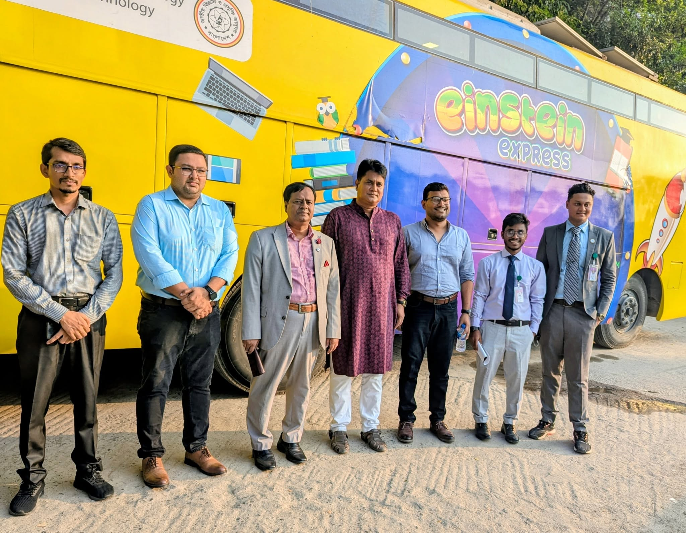
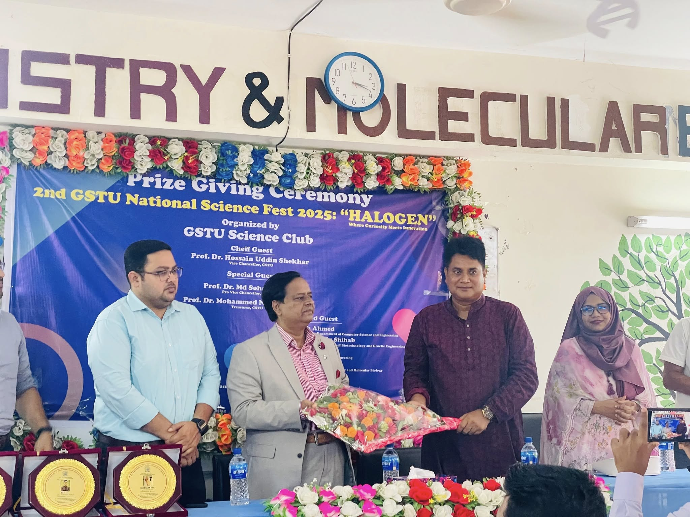
The **2nd GSTU National Science Fest 2025: "HALOGEN"** was a mega two-day national event organized by the Gopalganj Science and Technology University (GSTU) Science Club under the motto *"Where Curiosity Meets Innovation."* Held under the leadership of the university's top administration, including Chief Guest and Vice Chancellor Prof. Dr. Hossain Uddin Shekhar, the festival brought together around 600 students across distinct school, college, and university segments. Competitions ranged from foundational project showcasing and drawing for younger groups to highly technical challenges like Artificial Intelligence (AI) competitions, Genomic Olympiads, and research presentations for university scholars. A defining highlight of the festival was the deployment of the **"Einstein Express"** science exhibition bus, a mobile laboratory initiative designed to bring hands-on scientific concepts and experiential learning directly to local school children.
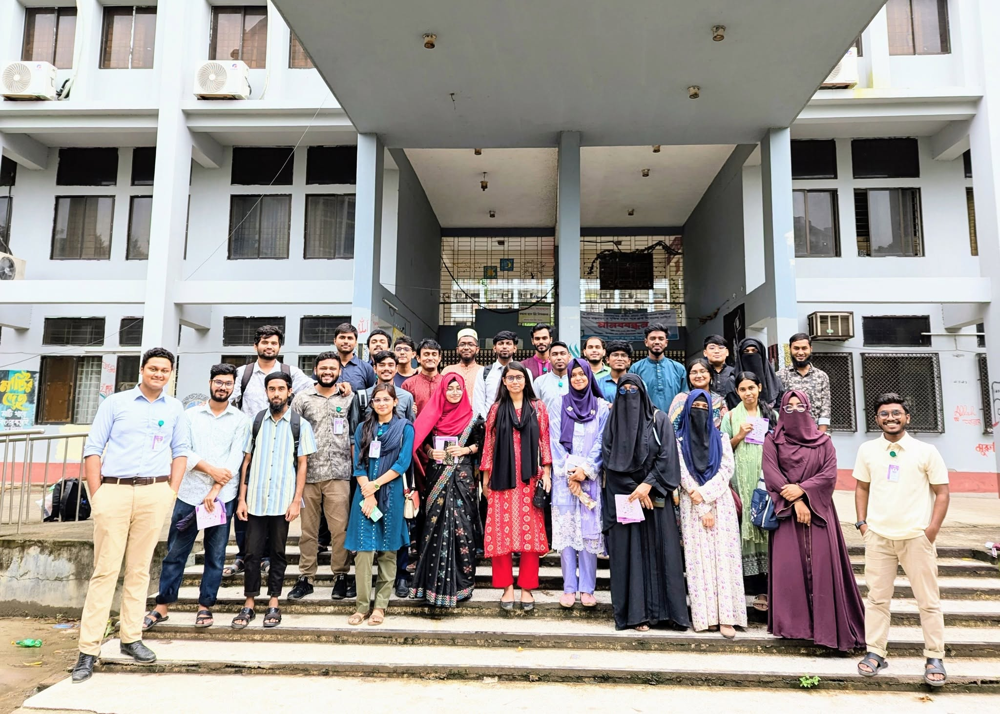
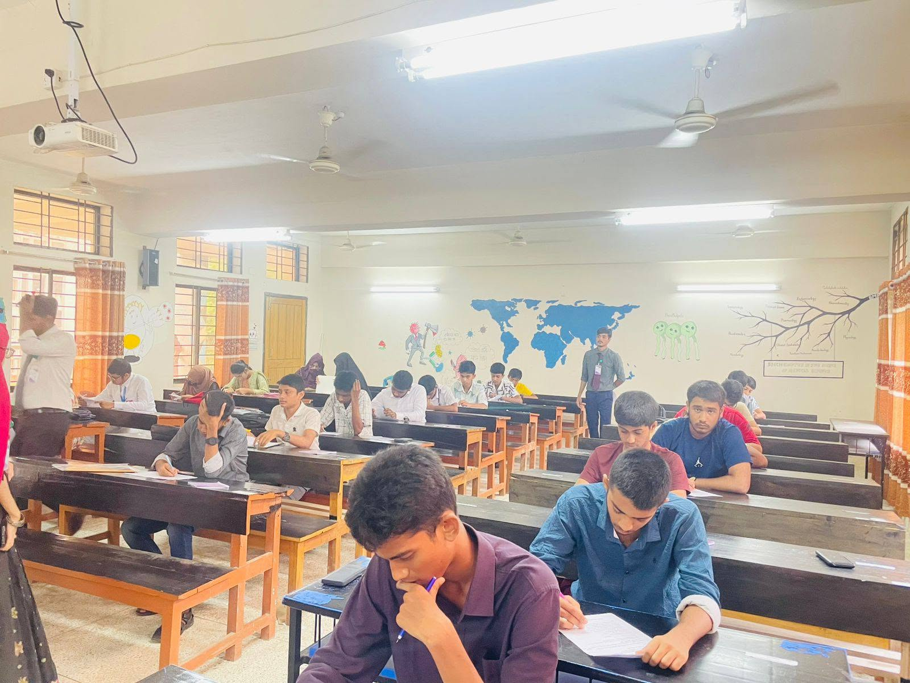
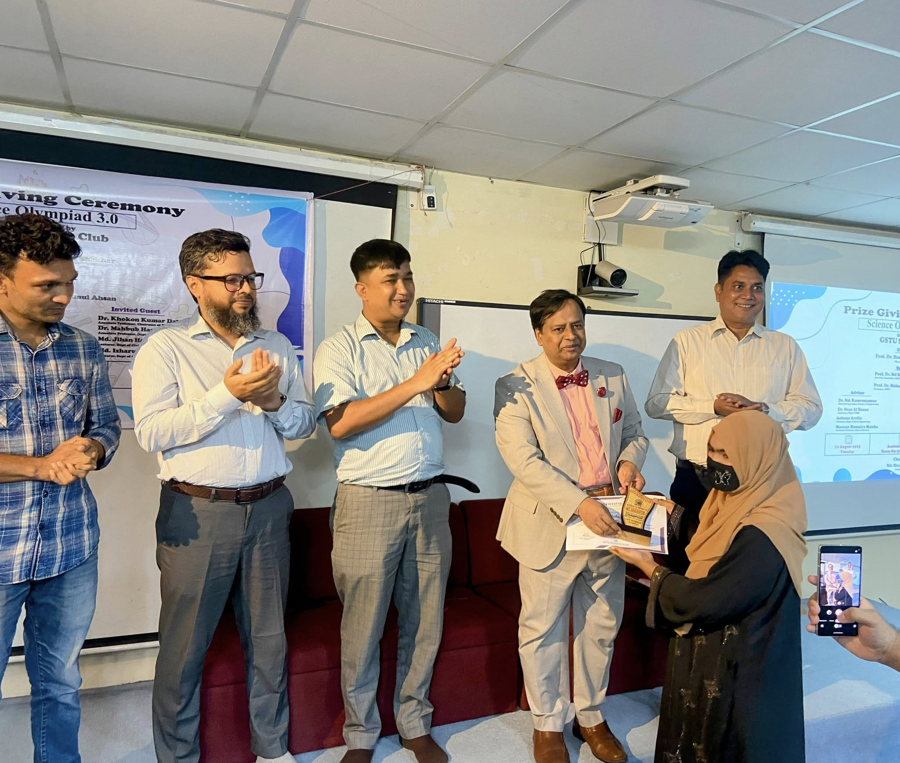
Organizer: Gopalganj Science and Technology University (GSTU) Science Club.
Event Title: Science Olympiad 3.0.
Participation: Approximately 150 students from school, college, and university levels participated in this edition of the Olympiad.
Highlights: The competitors showcased their merit, intelligence, and creativity by presenting solutions to various complex scientific problems, making the entire event lively and inspiring.
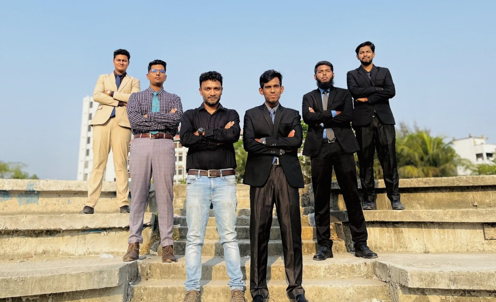
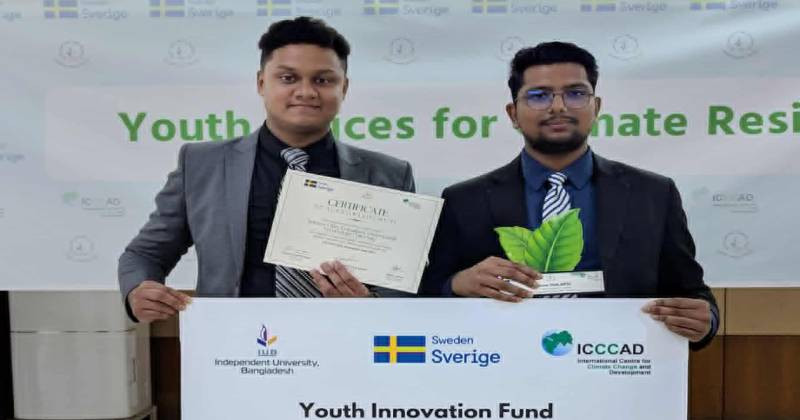
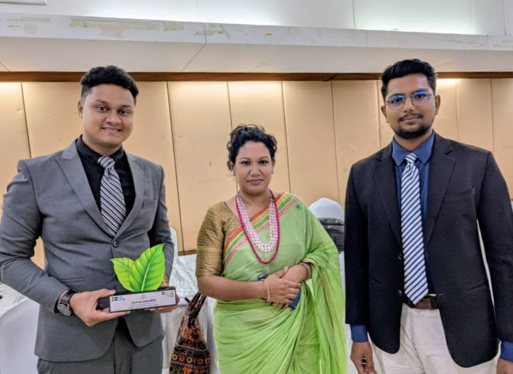
The Achievement
The Gopalganj Science and Technology University (GSTU) Science Club won a research grant of 3 Lakh BDT from the "Youth Innovation Fund 2025: Sponsoring Green Idea" competition.
Funded by: The Government of Sweden.
Organized by: International Centre for Climate Change and Development (ICCCAD).
The Project
Title: Integrated Coastal Resilience Hub: Citizen Science for Climate Adaptation and Pollution Change Management.
Objective: To gather valuable data and insights on environmental conditions and the impacts of climate change in the coastal region.
Supervisor: Dr. Neaz Al Hasan (Assistant Professor & Chairman, Department of Fisheries and Marine Bioscience, GSTU; Advisor, GSTU Science Club).
The Field Trip & Current Activity
As part of this ICCCAD project, the GSTU Science Club team has embarked on a field trip to the Sundarbans for data collection and citizen science activities. Over a span of two days, the team will be actively collecting environmental data from two specific areas:
Dublar Char
Hiron Point
Project Team Members
The research team consists of five students from various disciplines:
Muhammad Nahidul Islam (Civil Engineering)
Ariful Islam (Civil Engineering)
Sadman Bin Kawsar (Civil Engineering)
Md. Sakibul Alam (Biochemistry and Molecular Biology)
S. M. Nishan (Fisheries and Marine Bioscience)
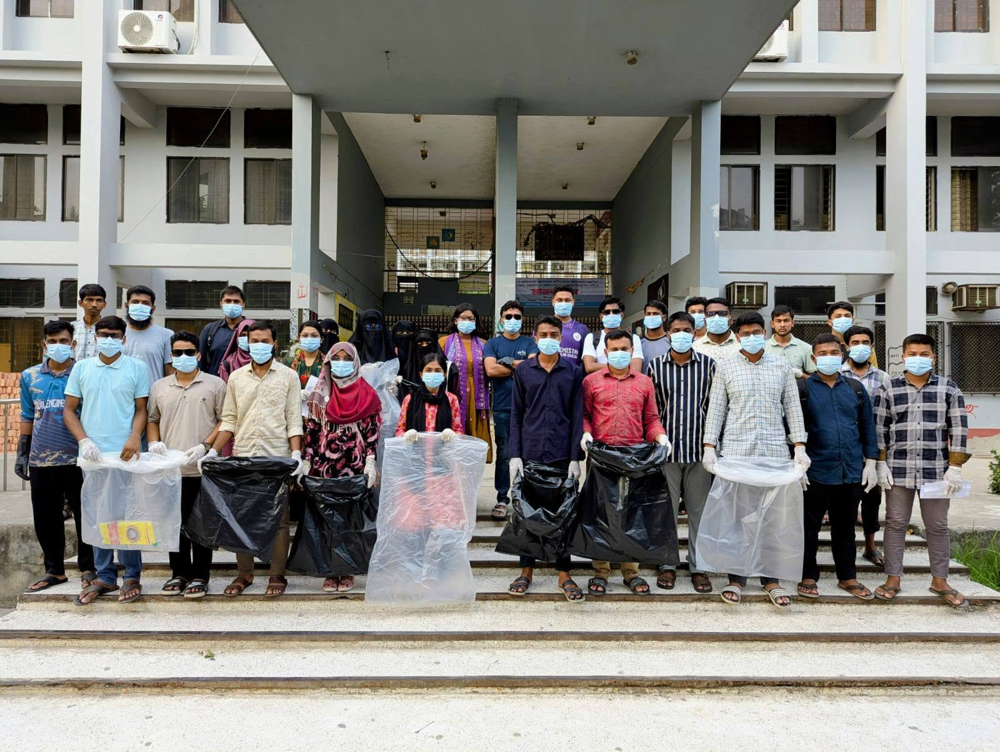
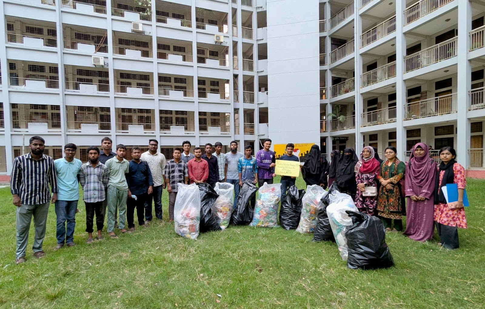
Campaign Title: "From Campus to Coast: Cutting Plastic for Climate Action" (Plastic Collection Campaign-2025).
Date: May 11, 2025.
Core Objective: A dedicated effort by the GSTU Science Club to reduce plastic pollution within the university campus.
Leadership: The initiative was led by Dr. Neaz Al Hasan, Chairman of the Department of Fisheries and Marine Bioscience (FMB) and Advisor to the GSTU Science Club.